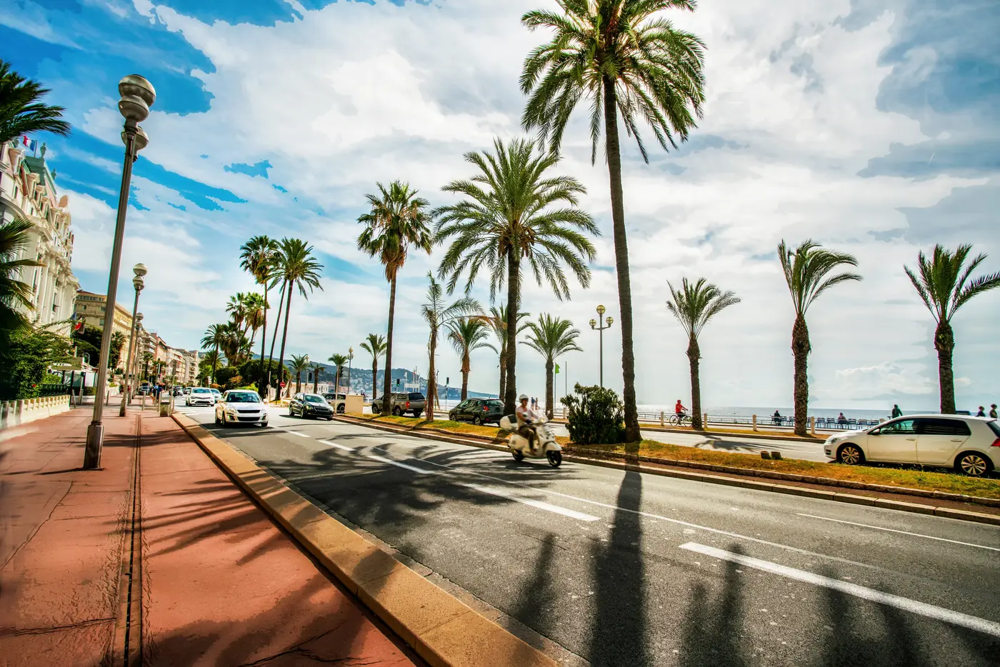

Carré d'Or
Vivre Nice à pied
Central, élégant et proche de la mer, le Carré d'Or offre une vie très urbaine. Commerces, restaurants, Promenade des Anglais et centre-ville sont immédiatement accessibles.
Ici, la localisation fait partie intégrante du bien : quelques rues peuvent modifier sensiblement l'environnement, le calme, la lumière ou la proximité de la mer.
